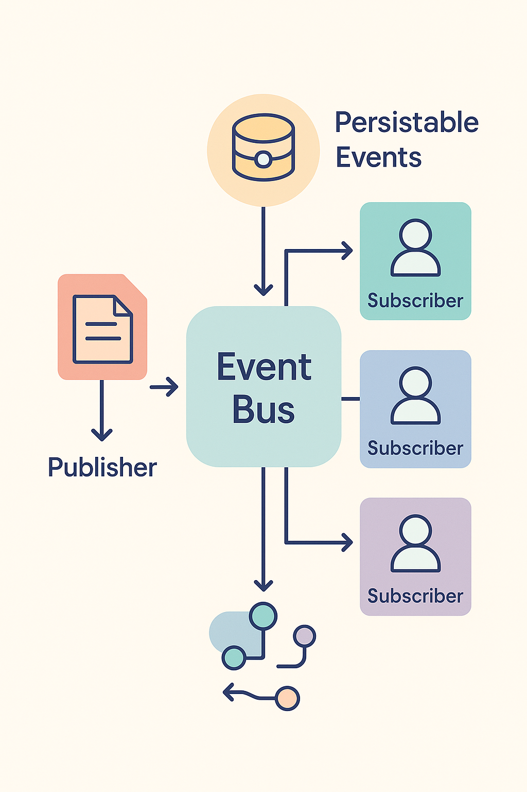

Мощный event‑driven фреймворк для мобильных приложений
FlowBus — это разработанный мной фреймворк для построения событийно‑ориентированных приложений. Он обеспечивает центральную шину событий, которая разрывает жёсткие связи между отправителями и получателями, что увеличивает модульность и позволяет свободно эволюционировать систему. В отличие от простых библиотек шины событий, FlowBus включает в себя поддержку долгоживущих (persistable) событий и обеспечивает высокую производительность, что важно для мобильных приложений.
Ниже приведена схематическая диаграмма FlowBus, где отображены издатели, центральная шина событий, подписчики и хранилище persistable событий.

Все компоненты FlowBus покрыты модульными тестами, что обеспечивает мгновенную обратную связь и поддержку эволюции кода без регрессий. Автоматизированное тестирование ускоряет разработку и уменьшает вероятность ошибок.
Сборка, проверка и публикация артефактов происходят через настроенные процессы CI/CD. Автоматизация сборок и тестов ускоряет выпуск новых версий, улучшает качество и уменьшает человеческий фактор.